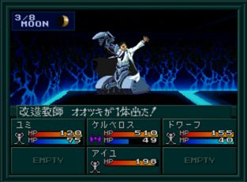

시설
- 1F : 무기, 방어구, 도구, 사교, MAG(1 MAG = 10 마카로 교환 가능), 회복, 운세
- 1F-B : CB
공략
분노계 3F
- ★ : 분노의 증서가 있어야 통과
남동쪽 계단으로 내려간다.
분노계 2F
- ★ : 하자마와 류이치
2F에서 하자마와 류이치를 만나고 선택지에서 YES를 선택하면 찰리가 파티에서 이탈한다. 우선은 NO를 선택하거나 그냥 지나치고 남동쪽 계단으로 내려간다.
분노계 1F
- ★1 : 점프 아저씨
- ★2 : 증서 판매
찰리가 동료로 있는 상태에서 1F 타운 북쪽의 아저씨에게 대화하면 선택지가 나오는데 NO를 선택하면 무상 마사무네(無想正宗)를 받을 수 있다.
다시 2F의 하자마가 있던 곳으로 가서 찰리를 이탈 시킨다.
1F의 증서를 파는 마계 사람에게 분노의 증서(怒りの手形)을 1만 마카에 구입해서 3F을 통과한다.
이후 아래로 계속 내려가 1F-A까지 가자.
분노계 1F-A
- 진행 순서 : W6→W7→W8→W9→W10
분노계 B1F-A
- ★1 : 류이치
- ★2 : 하자마
- 진행 순서 : W1→W2→W3→W4→W5→W6→W7→W8
- W20, W21 : 분노계 B1F-B로 이동
진행 순서를 따라 W8까지 가면 1F로 올라올 수 있다. 여기서 다시 B1F로 내려갈 수 있다.
앞으로 나아가면 류이치를 만나고 그 다음 방에서 하자마를 만나 메가톤의 구슬(メガトンの玉)에 대한 내용을 듣는다.
류이치가 있던 방의 북쪽 방향으로 나가서 워프를 타고 B1F-B에 간다.
분노계 B1F-B
- W20, W21 : 분노계 B1F-A로 이동
길을 따라 분노계 B2F로 간다.
분노계 B2F

- ★ : 하자마의 상
지도의 선을 따라서 진행하자. 중간에 하자마의 상을 보고 가야 된다. 계단을 올라가면 B1F-B에 간다.
'메가톤의 구슬'을 손쉽게 얻을 수 있도록 레벨 35까지 올린 다음에 여기서 출현하는 Lv35 지령 우베르리(地霊ウベルリ)를 미리 중마로 만들자.(동쪽 부근에 출현하는듯)
'메가톤의 구슬'은 힘과 체력의 합계가 30이상의 악마를 소환하고 있지 않으면 입수할 수가 없다.
추천하는 악마는 다음과 같다.
Lv33 파괴신 아레스(破壊神アレス)
- 지령 ノッカー × 타천사 ウコバク × 요조 ベンヌ (저러벨 악마 3신 합체)
- 야마 アルプ × 지모신 ヴェスタ
Lv35 지령 우베르리(地霊ウベルリ)
분노계 B2F에서 출현, 회화로 중마로 만들면 된다.
분노계 B1F-B (2)
동쪽에서부터 시작한다. 길을 따라 쭈욱 나가다가 남서쪽의 계단으로 1F-B에 가자.
분노계 1F-B
- ★1 : 타천사 암두시아스
- ★2 : 메가톤의 구슬
- ★3 : 오오츠키
- 서쪽 지역에서 BOSS:타천사 암두시아스을 넘어뜨리고 다음 방에서 '메가톤의 구슬'(입수 조건이 있음)을 입수
- B1F-A의 하자마가 있던 곳으로 돌아가서 대화를 한 다음에 B1F-B 동쪽의 올라가는 계단으로 가면 1F-B의 동쪽 지역에 갈 수 있다. 여기서 BOSS:개조교사 오오츠키2와 전투
- 또 다시 B1F-A의 하자마가 있는 장소로 간다. 하자마와 대화 후 B2F의 하자마의 상이 있던 장소로 가자. 대화를 하면 경배할 것인지 물어보는데 YES를 선택하자. 짜증나지만...다시 B1F-A의 하자마에게 돌아가자. 이제는 아키코와 함께 사라져버린다.
- 마지막으로 B1F-B의 남동쪽 계단을 통해 1F-C로 갈 수 있다.
BOSS:타천사 암두시아스
| 이름 | Lv44 堕天使アムドゥシアス |
|---|---|
| HP | 555 |
| 마법/특기 | ジオンガ／マカジャマ／タルンダ／デカジャ／子守歌／魔界の調べ |
BOSS:개조교사 오오츠키2
| 이름 | Lv46 改造教師オオツキ |
|---|---|
| HP | 777 |
| 마법/특기 | ハンマーパンチ／鉄拳パンチ／押し潰し／連射撃ち／守る |
분노계 1F-C
- ★ : 류이치와 아키코의 석상
- 진행 순서 : W1→W2→W3→W4
안쪽에서 석상을 파괴시키면 드디어 분노계를 클리어하여 링을 얻을 수 있다.